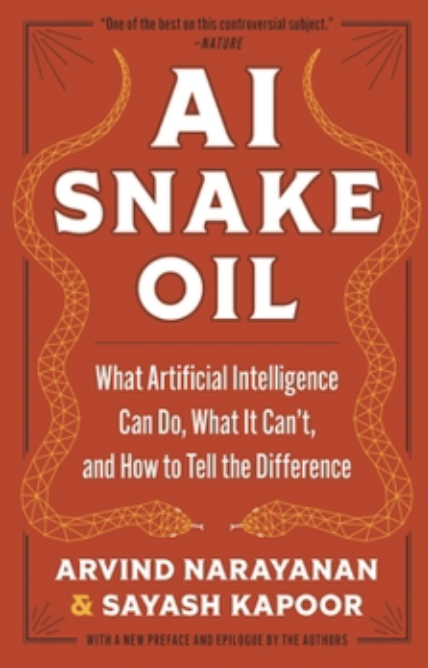

Book Notes

AI Snake Oil
Arvind Narayanan & Sayash Kapoor · 2024
A systematic takedown of AI hype — distinguishing genuinely capable AI from predictive AI that doesn't work and generative AI that's oversold. Two Princeton researchers with deep technical chops and a political economy lens.
Passages I underlined and quotes that stuck. In the order I encountered them.
AI Hype & Prediction
"The appeal of predictive AI is based on the collective delusion that AI is good at prediction." — p. xiii
"That hype leads to overreliance, such as using AI as a replacement for human expertise instead of a way to augment it." — p. 28
"This comparison highlights another important quality of predictions. We only care about how good a prediction is in relation to what can be done using that prediction." — p. 68
"Another reason for the hype in the AI community is a lack of focus on scientific understanding. Instead of scientific explanations for why AI works well, the community focuses primarily on improving the performance of AI on benchmark data sets." — p. 237
"Performance on benchmark datasets overestimates the usefulness of AI in the real world... Real world utility is different from good performance on a benchmark." — p. 241
Human Psychology & Randomness
"It all comes down to our inability to handle the uncertainty hanging over our lives... That somehow feels better than not knowing at all." — p. 57
"And so the discomfort we experience with randomness can lead to a search for patterns where none exist. This paves the way for biases." — p. 58
"This is just another way to say that the market for cultural products has rich-get-richer dynamics built into it. Also called cumulative advantage. Regardless of what we may tell ourselves, most of us are strongly influenced by what others around us are reading or watching, so success breeds success." — p. 83
AI, Capitalism & Labor
"AI Snake Oil is appealing because those buying it are in broken institutions and are desperate for a quick fix." — p. 33
"More broadly, we show how concerns about AI, especially in the labor market, are often really about capitalism. We must urgently figure out how to strengthen existing safety nets and develop new ones so that we can better absorb the shocks caused by rapid technological progress and reap its benefits." — p. 34
"Content moderation is another example of the fact that failures and limitations of AI have less to do with AI and more to do with the institution adopting it." — p. 226
"The real impact of AI is likely to be subtler. AI will shift power away from workers and centralize it in the hands of a few companies." — p. 254
"When there are multiple valuable goals that can't be accurately quantified relative to each other, optimization can backfire badly." — p. 266
"Workers aren't afraid of technical advances themselves. Rather, they are afraid of how AI would be used by employers and companies to reduce workers' power and agency in the workplace. To address the labor impact of AI, then we need to address the impact of capitalism." — p. 279
Content, Media & Harm
"It is that sliver of viral content that dominates our attention... Much of social media is a giant meme lottery." — p. 87
"Video of beheadings, images of child sexual abuse, words of horrifying hatred. It's traumatic-inducing work done by hundreds of thousands of invisible low-wage workers, mostly in less affluent countries, working for third-party outsourcing firms rather than directly for platform companies." — p. 180
"There is always a slippery slope looming in the background of misinformation interventions. Authoritarian governments often use the boogeyman of harmful misinformation as an excuse to repress speech that challenges their power." — p. 197
"The leading one is the financial strain that the media is under. The rise of social media and click-driven journalism has led to a dramatic decrease in the ability to do in-depth research profitably." — p. 251